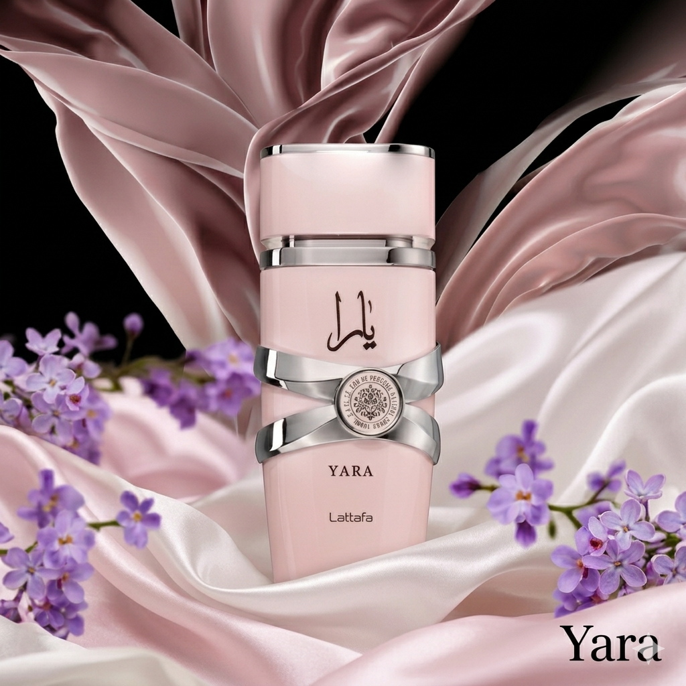
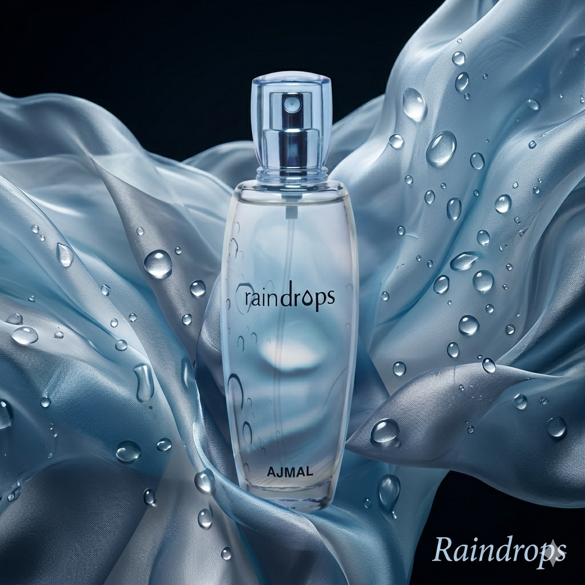
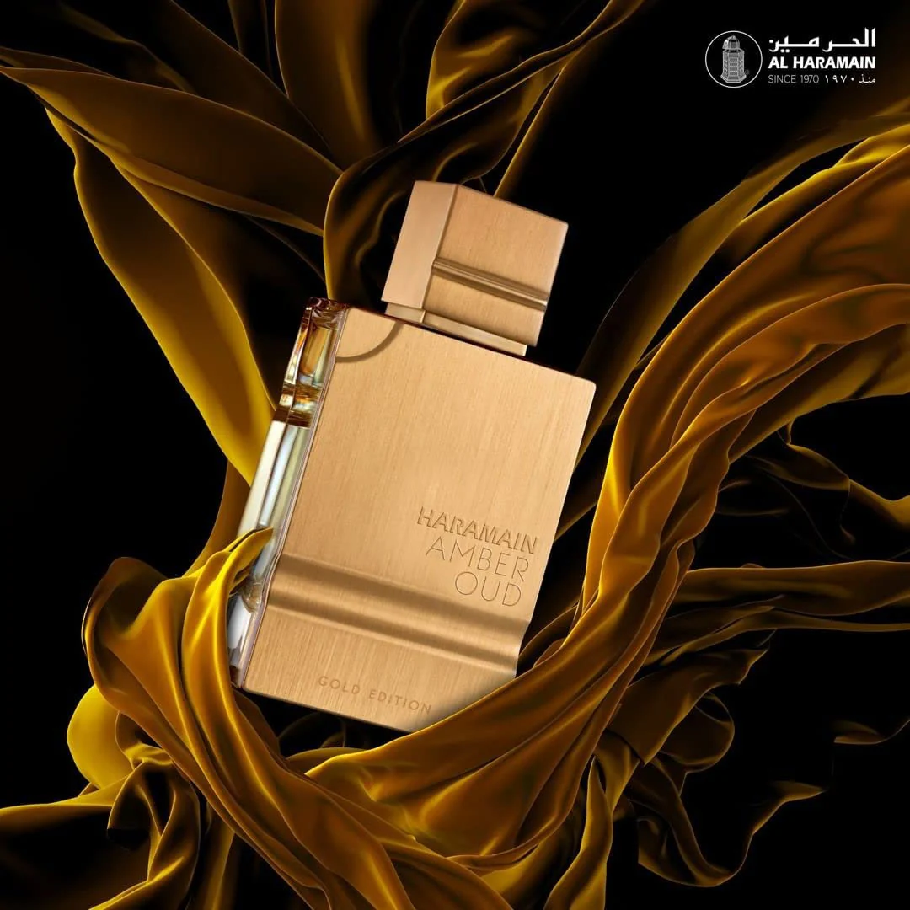
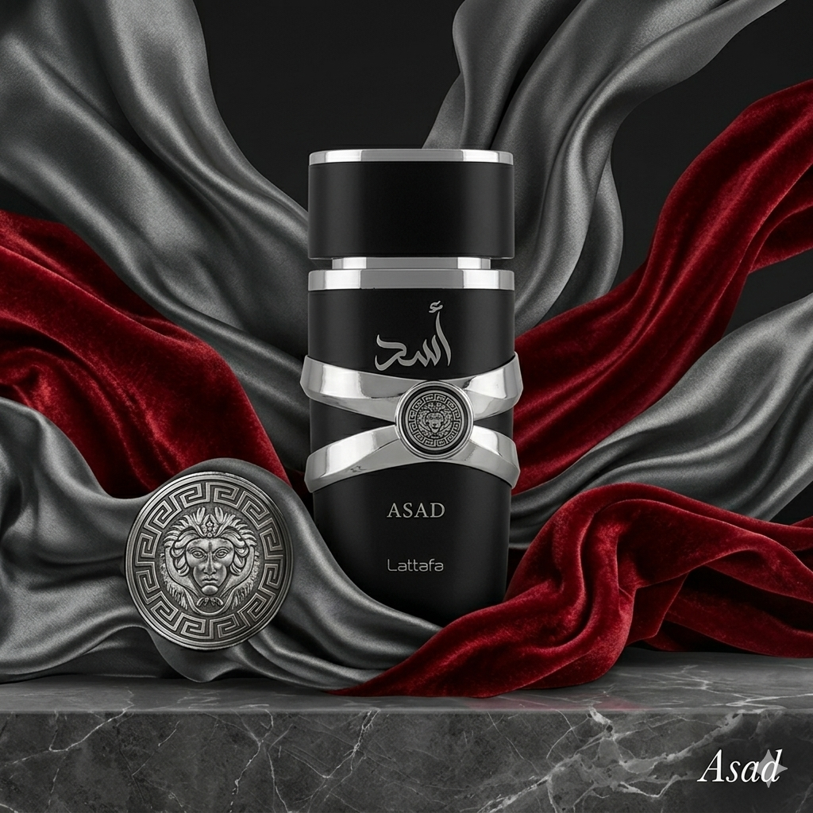
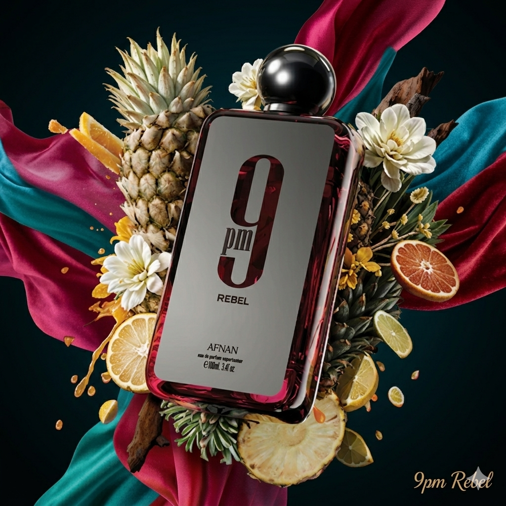
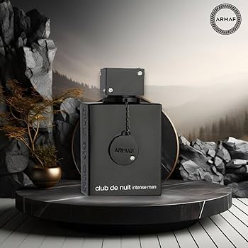

Arapski parfemi predstavljaju srce i dušu orijentalne parfumerije te nose bogatu tradiciju koja se prenosi stoljećima. Poznati su po svojoj intenzivnosti, dubini i dugotrajnosti te simboliziraju luksuz i eleganciju.
Najčešće note arapskih parfema su oud, ambra, mošus, ruža, šafran i razni začini. Mirisi su jaki, dugotrajni i razvijaju se kroz vrijeme na koži.
Top 3 ženska arapska parfema

Lattafa Yara
Vanilija, tropsko voće i mošus. Sladak, ženstven i dugotrajan parfem.

Ajmal Raindrops
Cvjetne note, voće i amber. Elegantan i svjež miris.

Amber Oud Gold
Ananas, dinja, vanilija i mošus. Vrlo sladak i jak parfem.
Top 3 muška arapska parfema

Lattafa Asad
Vanilija, duhan i začini. Jak i muževan parfem.

Afnan 9PM
Jabuka, cimet i vanilija. Idealan za večer.

Club de Nuit Intense
Limun, ananas, breza i mošus. Vrlo dugotrajan parfem.